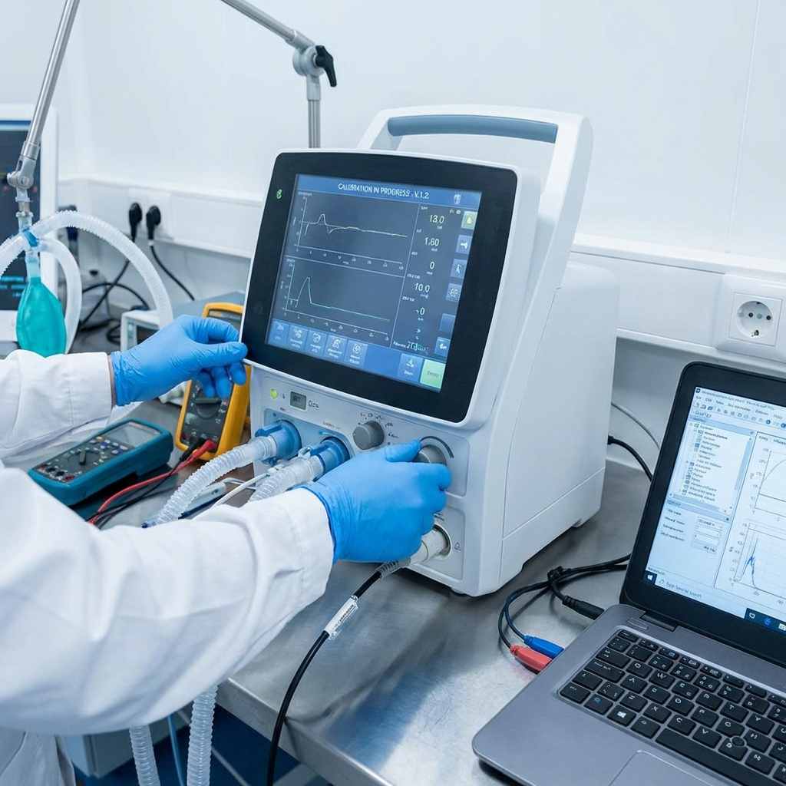

Kyron Healthcare operates under a rigorous Quality Management System (QMS) ensuring every device meets stringent clinical safety and performance standards.
"At Kyron Healthcare, our primary commitment is to neonatal safety and clinical reliability. We maintain a culture of continuous improvement, adhering to global regulatory frameworks to deliver innovations that clinicians trust for the most fragile lives."
ISO 13485:2016
Certified Quality Management System
Verified by international and national regulatory bodies.
Central Drugs Standard Control Organisation, India
Class C Medical Device Registration
Medical Devices — Quality Management Systems
Manufacturing & Design Excellence
Department for Promotion of Industry and Internal Trade
Innovative Medical Technology Startup
Safety doesn't end after manufacturing. Kyron Healthcare maintains a proactive vigilance system to monitor device performance and clinician feedback in real-world environments.
